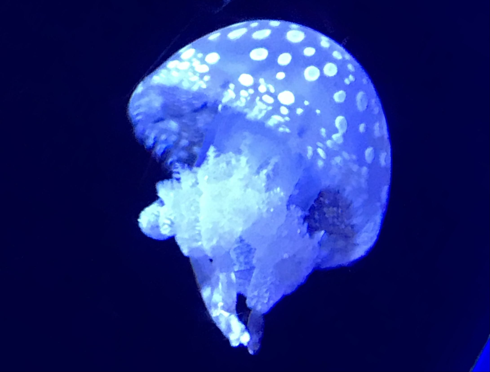

Yutosa's room
ユートサの部屋
profile

2001年生まれの情報系B4。医用画像工学研究室所属。吹奏楽部・大学祭実行委員会など。
吹奏楽部ではトランペットをやっていました。
favorite
好きなものを布教していく～！
music
小学校は金管バンド部、中・高・大とずっと吹奏楽部でした。 お気に入りの吹奏楽曲の動画を貼っておきます。 いっぱいあって紹介しきれない...
流行りの曲もボカロも聞きます。
food
食べることが好きで、ラーメン屋さんや喫茶店巡ったりしてます。
飯テロ画像を載せちゃう。
something
作ったものとか。
広島市立大学第29回大学祭 (2022.ichidaisai.com)
(2022年春～秋)
自分もコード書きましたが、主にPM的な立ち位置でやりました。
同じ部署の仲間と作りました。
html/css/javascriptの勉強を始めて、初めて一般の人に見てもらいました。
timetable
(2022年12月～2023年2月)
GitHub→https://github.com/y6310/timetable
時間割作成アプリです。
html/css/javascriptで作りました。練習作です。
このホームページ
(2023年3月)
大学祭のホームページ作ったりして、html/css/javascriptに慣れたけど実際に自分で公開までやったことないな～と思って作りました。
少しFigma使ってみたり、jQuery使ってみたりしました。